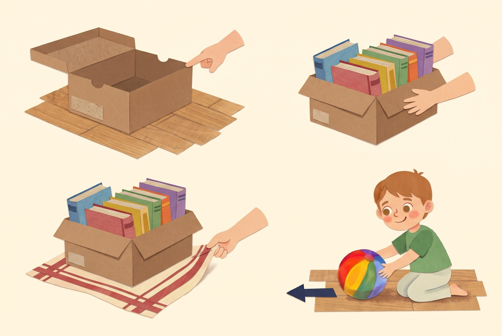
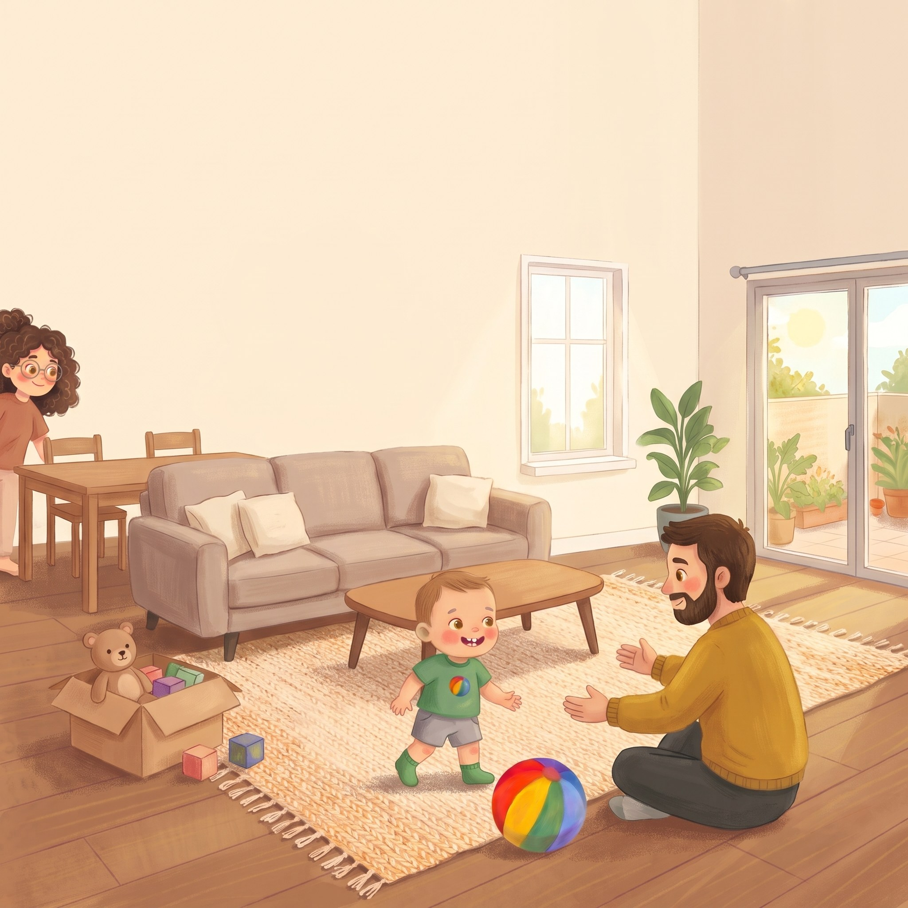

Necesitás: una caja de zapatos, libros o juguetes para llenarla, un repasador y una pelota.

| Qué muevo y cómo | Yo creo que… | Lo que pasó |
|---|---|---|
| Caja vacía, con un dedo | ||
| Caja llena, con un dedo | ||
| Caja llena, con las dos manos | ||
| Caja llena, tirando del repasador | ||
| Pelota suave y fuerte: ¿cuántos pasos? |
En el desafío, anotá hasta cuántos pasos llegó la pelota cada vez.

El concepto. Una fuerza es un empujón o un tirón. Mover algo pesado cuesta más porque hay que hacer más fuerza para ponerlo en marcha, y porque se apoya más contra el piso, que lo frena: es la fricción del libro 3. Caminar también es una cuestión de fuerzas: en cada paso el pie empuja el piso hacia atrás, y el piso empuja el cuerpo hacia adelante.
El hito. Muchos bebés dan sus primeros pasos sin agarrarse entre los 12 y los 15 meses, más o menos; algunos antes y otros un poco después. Al principio caminan con las piernas abiertas y los brazos en alto, y se caen sentados seguido: es parte de aprender. Cada bebé tiene su ritmo; ante cualquier duda, lo mejor es consultar al pediatra.
Seguridad. Al caminar llega más lejos y más rápido: conviene poner rejas en las escaleras, proteger las esquinas de los muebles y fijar a la pared lo que pueda volcarse. En casa, descalzo o con medias antideslizantes; afuera, con zapatillas flexibles. Los pediatras recomiendan no usar andadores con ruedas: los juguetes para empujar, firmes y estables, son una mejor opción.
Para charlar después de leer: ¿Cuántos pasos hay de tu cama a la puerta de tu cuarto? ¿Y hasta la cocina? ¿Qué cosas de tu casa podés mover empujando? ¿Cuáles no se mueven aunque empujes fuerte? Cuando caminás, ¿quién empuja a quién: tu pie al piso o el piso a vos? (Los dos.)